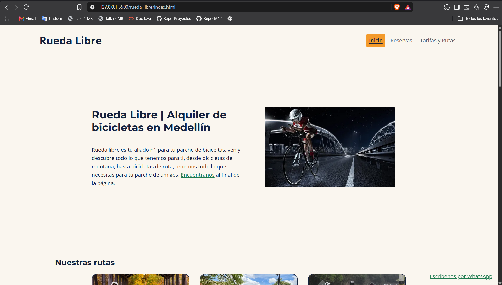

Rueda Libre  Plataforma de gestión y visualización de proyectos colaborativos, diseñada para facilitar la interacción entre usuarios y equipos. Tecnologías HTML CSS JavaScript Objetivo Mejorar la experiencia de navegación y permitir una organización más clara de la información. Ver demo GitHub